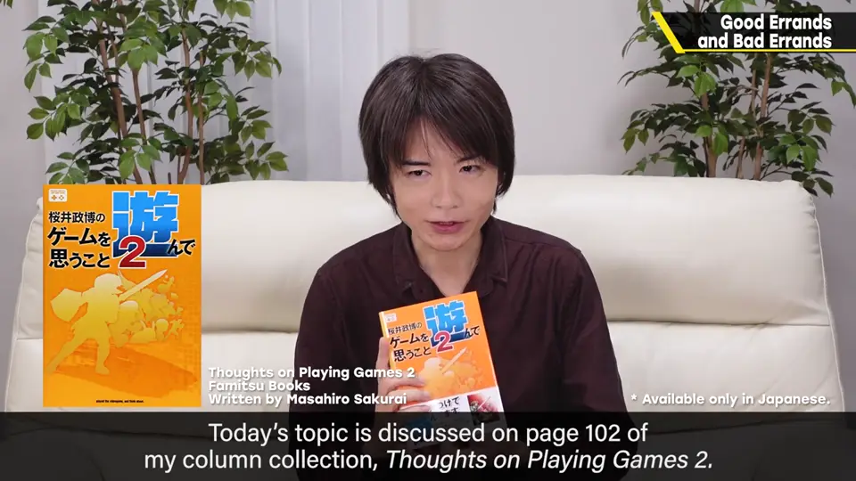
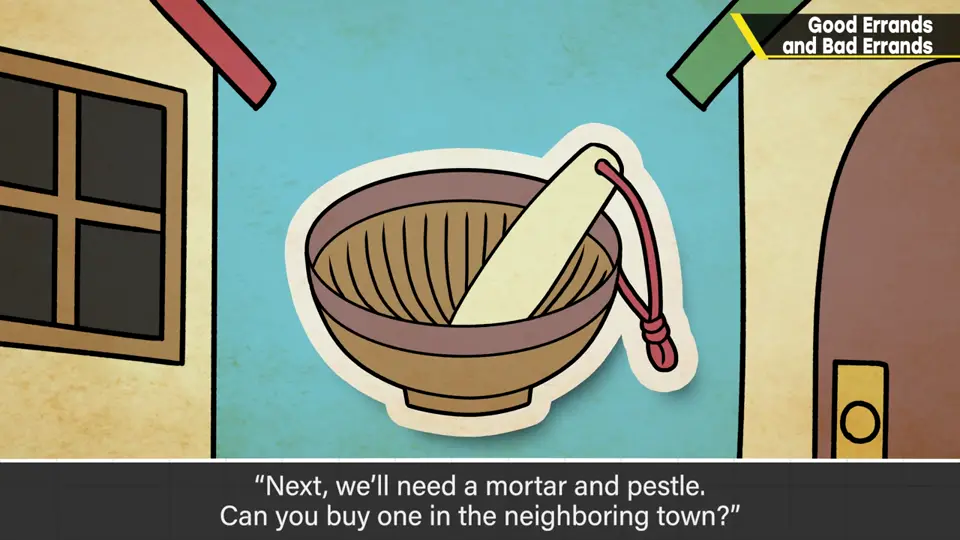
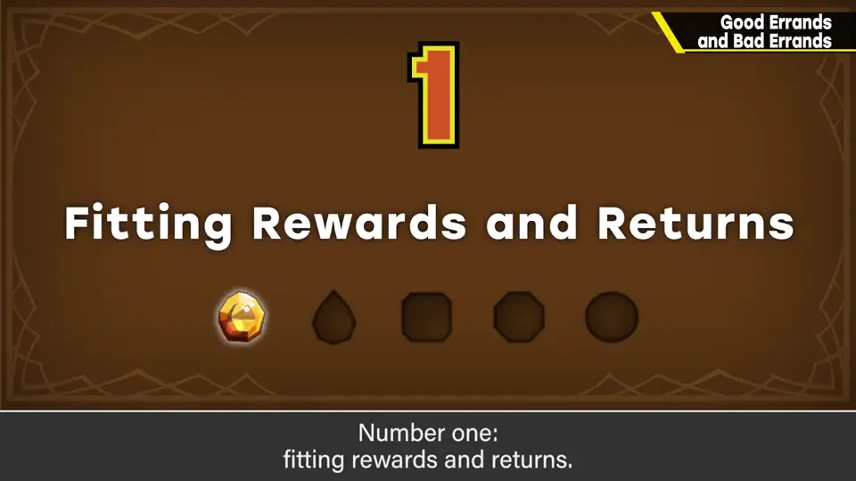
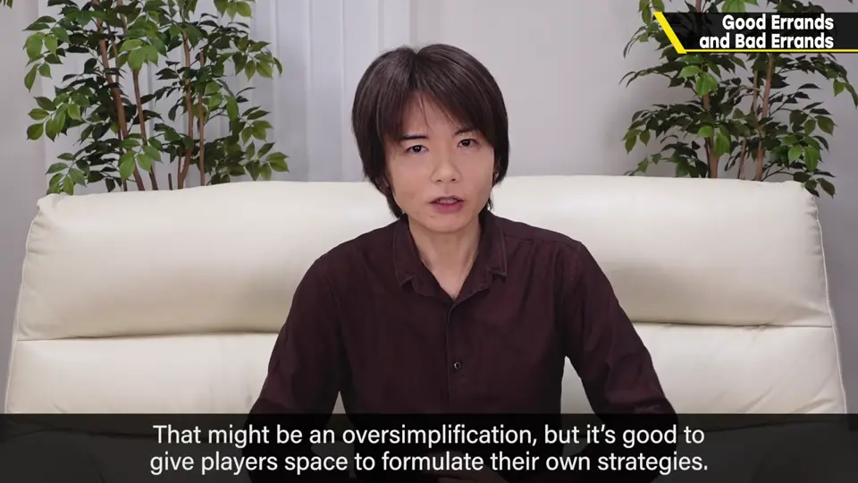
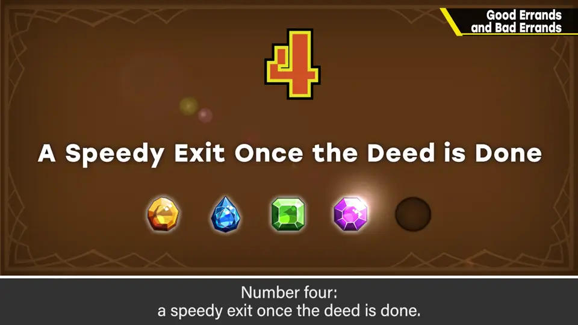
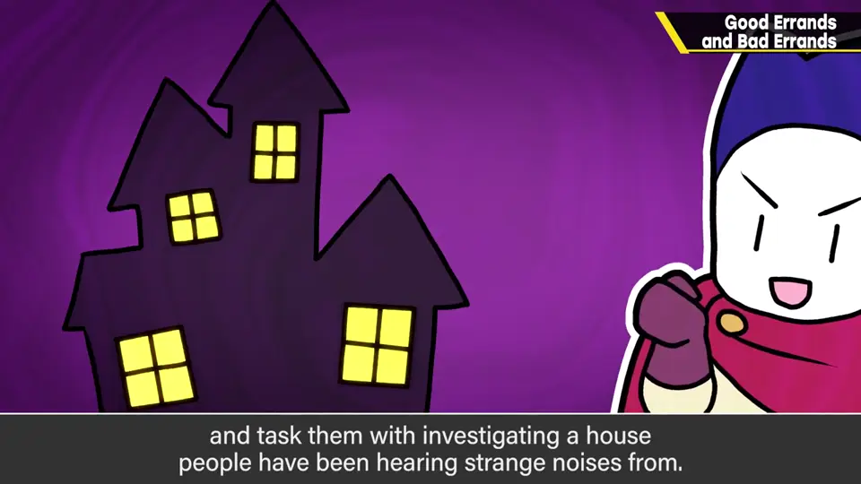

速览
喜欢游戏里的跑腿吗？也就是按剧情被派来派去。以前的游戏大概多数人讨厌，现在的游戏未必——游戏变得更好、更多样，途中的战斗或采集也有成就感。本期出自专栏集《玩游戏时想到的事 2》第 102 页（不是广告）。书中例子：「我可怜的女儿病重，请去草原采药草，再回村；接着要调药用的研钵，去邻镇买」——很无聊吧。同样是跑腿，肯定有更好的表现方式。五个条件：① 报酬/回报合适：拿到游戏里能用的东西很重要，看到有趣剧情的后续也能是报酬。② 获得喜悦的间隔短：同一个跑腿中小喜悦的瞬间要多；采集或战斗的报酬有趣就够了，出人意料的展开也行。③ 给予攻略自由：绕远但安全的路，还是近但危险的路，每个人有攻略的幅度，自己选的路更有攻略感。④ 有结果就迅速撤收：在当地达成目的就立刻回城算通关——旅行的回程总比去程无聊，只让玩家享受好玩的部分。⑤ 让人期待展开：别让玩家为「去买肉」这种无所谓的事移动，也需要包含设定背景的谜；例如同样距离，改成「孩子接连失踪之际，某个少女不见了，请去她家看看」。机制上同样是老套的立旗跑腿，但同样让玩家移动，更好的呈现方式有很多。
1. 跑腿未必无聊 0:04
你喜欢游戏里的跑腿吗？也就是因为剧情需要被派去各个地方。以前的游戏大概多数人都讨厌，现在的游戏未必如此——因为游戏变得更好、更多样了，途中有战斗、有素材收集，总有些成就感。


书里举的例子：「我可怜的女儿病得很重，请去草原采药草，然后回村。接下来要调药用的研钵，请去邻镇买。」——听起来就很无聊。
同样是跑腿，一定有更好的表现方式。下面是好跑腿的五个条件。
2. 五个条件 1:18
① 报酬、回报合适：能拿到游戏里用得上的东西很重要；通关后能看到有趣剧情的后续，也可以是报酬。


② 获得喜悦的间隔要短：同一个跑腿中，获得小喜悦的瞬间应该更多。采集、战斗的报酬有趣就够了，也可以安排出人意料的展开。
③ 给予攻略的自由：选绕远但安全的路，还是近但危险的路？每个人应有攻略的幅度，让玩家觉得是自己选的路、自己的攻略更好。
④ 有结果后迅速撤收：在当地达成目的，就立刻回城算通关。想想旅行就明白：回程往往没有去程好玩，只让玩家享受有趣的部分就好。

⑤ 让人期待展开：比如在城里近距离移动的情况，不该让玩家为「去买点肉」这种无所谓的事跑动；也需要包含设定背景的谜团。
3. 同样的移动，更好的呈现 2:56
例如同样移动一段距离，可以改成：孩子接连失踪的时候，有个少女不见了，请去她家看看情况。

自测题
1. 樱井列出好跑腿的五个条件是什么？
① 报酬与回报合适 ② 获得喜悦的间隔短 ③ 给予攻略自由 ④ 有结果就迅速撤收 ⑤ 让人期待展开。 1:18
2. 为什么要在达成目的后「迅速撤收」？
就像旅行的回程比去程无聊，只让玩家享受好玩的部分即可。 2:11
3. 怎样把「去某处看看」的跑腿变得更吸引人？
加入设定背景与谜团，例如孩子接连失踪时去调查失踪少女的家，让人期待后续展开。 2:56